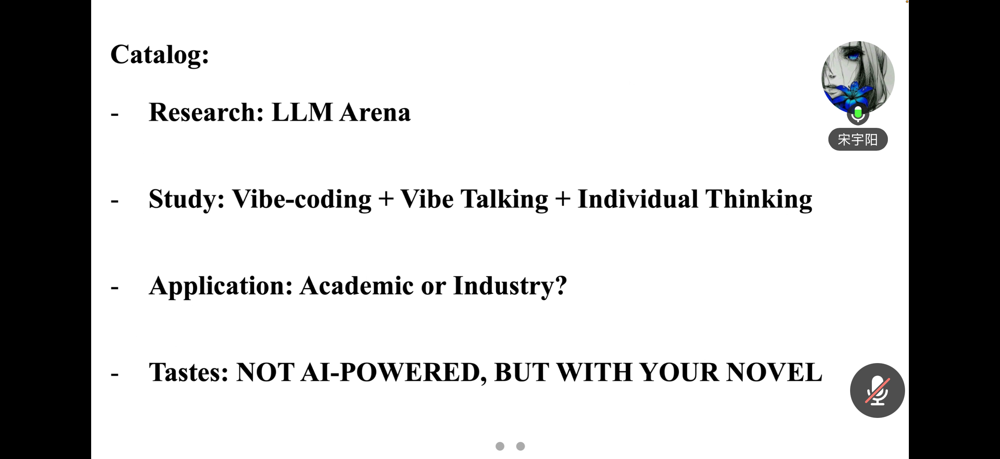

执委不仅是服务者，更在实践中不断成长。分会以"培养人、锻炼人、成就人"为目标，
构建系统化培训体系，推动执委在学术、竞赛、组织和领导力等方面全面发展。
CCF 川大学生分会坚持"学会赋能、学院指导、学生主导"的建设思路，将执委培养作为分会可持续发展的核心任务。通过系统化的能力培训、实战化的活动组织历练和常态化的团队建设，帮助每一位执委在服务同学的过程中实现个人能力的全面提升。
跟踪学术前沿动态，锻炼工程实践能力。通过组织学术讲座、参与科研项目、承担技术工作，帮助执委夯实专业基础，拓展技术视野。
在活动策划、现场执行、跨部门协作和对外联络中锻炼沟通协调能力，学会统筹资源、分工协作、把控流程。
通过项目负责人制度、老带新传承机制和轮值主席制度，在实践中培养决策能力、团队激励和责任担当意识。
以服务会员为核心使命，引导执委树立利他精神和社会责任感，在服务他人中收获成长与意义感。
分会定期面向执委和骨干成员开展专项能力培训，内容涵盖学术科研、技术实践、组织管理和综合素养等方面，帮助执委在任期内获得系统化的能力提升。

执委在任期间不仅为分会发展贡献力量，也在学术科研、竞赛实践和个人荣誉等方面取得突出成绩，体现了分会"服务与成长并重"的育人理念。
2026 年第二届 CCF 算法能力大赛中，多位执委斩获佳绩：国家级二等奖 2 人，区域赛一等奖 4 人，10 人入选全国总决赛。
多位执委在 CCF CSP 认证中获得 300 分以上高分，展现了扎实的算法基础和编程能力。
执委团队在 ICPC 国际大学生程序设计竞赛、全国大学生数学建模竞赛等赛事中持续取得优异成绩。
多位研究生执委在 CCF-A/B 类会议和期刊上发表学术论文，研究方向涵盖人工智能、计算机视觉、自然语言处理等前沿领域。
执委积极参与国内外学术会议，包括 CCF 青年精英大会（YEF）、中国计算机大会（CNCC）等高水平学术活动。
多位执委荣获国家奖学金、学业一等奖学金等荣誉，学业成绩与综合素质表现突出。
分会多次获评 CCF 年度优秀学生分会（2013、2016、2017、2022、2023、2025），是执委团队共同努力的集体成果。
分会获评四川大学"百佳学生集体""十佳学生集体""优秀社团活动"等多项校级荣誉。
分会定期组织执委团建活动，营造融洽的团队氛围，增强成员之间的凝聚力和归属感。
团建活动照片将陆续更新，敬请期待。